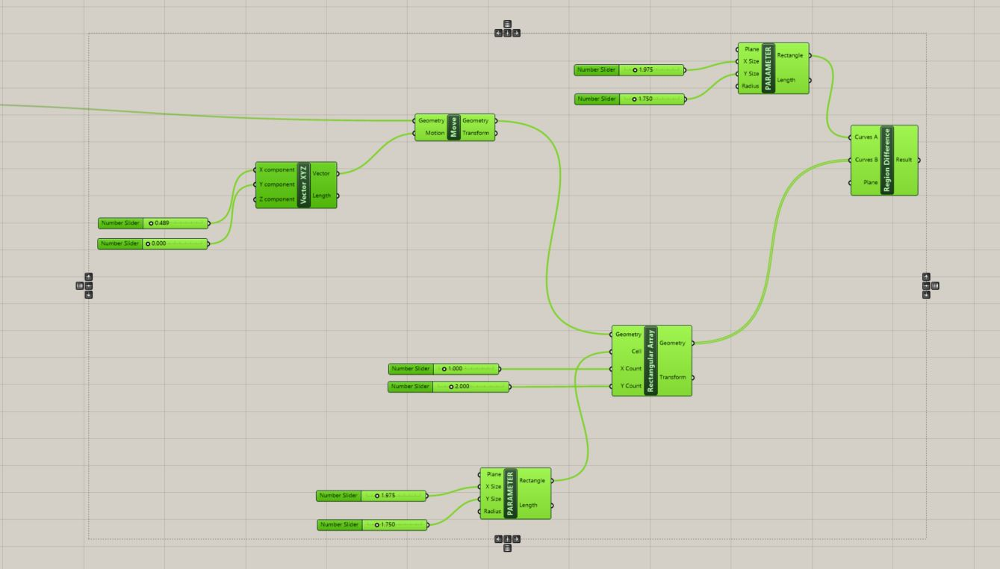

Lukas' Assignment 2: CAD Model Construction Kit & Fabrication!
Overview:
Synthesis / Define
Design prompt criteria:Ideation / Develop
The first thing I did was dimension the old puzzle pieces so I could fix minor issues and define variables to create a clearer understanding of the dimensioned relationships between pieces.
Ideally the changes would have created a more flush and compact piece earlier on in the developement.
This created mental clarity for me around making adjustments to the sketch's variables such that they keep the Press Fit intact.


Test / Implementation / Deliver
Upon Jumping over to draw the model in Rhino and Grasshopper, I realized that the dimensioned drawings was tangental to the process required for Grasshopper.
As such, I went back to the drawing board to create a process for Grasshopper that would additionally simplify the model.
The variable "T" stands for the the cardboard thickness, as seen in the second photo.

Problem:
Among smaller issues like accidentally starting a fire, I know that knowing a more efficient manner to solve the problem i encountered in Solidworks impacted and drained my patience while learning.Using Solidworks daily for a niche specialization in modeling aerospace tools into orthographic drawings created an internal bias while learning Visual Scripting.
To overcome this I had to realize that I experienced "Law of the Instrument" or "Confirmation bias".

Solution:
My solution to this issue was to mentally let go of my Mechanical Engineering & Solidworks training so that I could focus on learning how to correctly create a CAD Visual Diagram.For example, when I look at a 2D image to consider it's 3 dimensions, I slice it in half and consider how I would get this outcome if I was subtracting the material.
With Visual Diagrams in Grasshopper, one has to break down the model into small dimensions which make up the components from the ground up.


Reflection
In hindsight, i should have paused the developement of pieces until I was more familiar with the software.
Instead I should include pausing during the researching the process to design the pieces with the new software in mind before heavily developing a product.
Attribution:
Joshua and the Tuesday night Crew ( Kellie, Julie Do, Demarcus, and Julie Rose) helped teach me Grasshopper best practices.
Wikipedia Source on Law of the InstrumentMachine Settings:

Source files
Click the image below to download the Rhino or Grasshopper Files